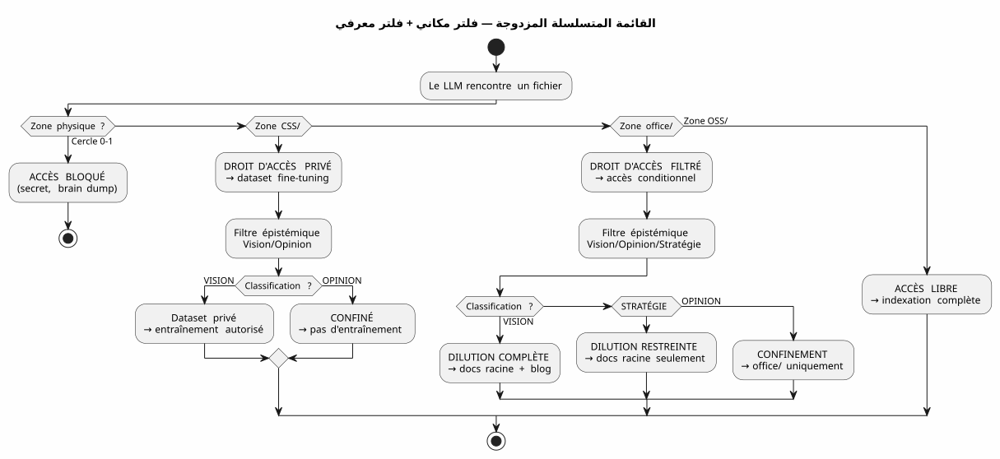
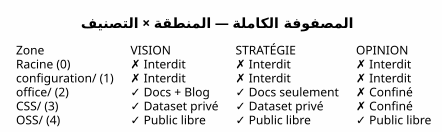

مصفوفة الحوكمة LLM — لماذا يبدأ أمن الذكاء الاصطناعي الخاص بك بالبنية الشجرية
Publié le 04 May 2026
لشهرات، قمت بتراكم قواعد حوكمة الوكيل. ملفات EAGER, قوائم مراجعة LAZY, بروتوكولات نهاية الجلسة المكونة من ست خطوات ومع ذلك، كان سؤالٌ ما يزال معلقًا: كيف يعرف النموذج اللغوي الكبير ما هو هل له الحق في أن يفعل مع ملف؟*
الجواب ليس في موجه. إنها في نظام الملفات.
هذه مواصفات العمارة التي تجعل الرد قابلاً للاستغلال — la مصفوفة حوكمة LLM.
المشكلة: هندسة المطالبات هي قلعة رملية
المحتوى، نعم — لكن أيضًا غياب الحواجز الوقائية. نموذج LLM لا يعرف ما إذا كان هذا الملف يحتوي سر، رأي تخميني، أو كود مغلق المصدر. سيتم فهرسته تلخيصه، الاستشهاد به، خلطه مع بيانات أخرى — وربما نشره في تضمين عام أو رد مستخدم.
الاستعراض التقليدي هو المحفز :
"Tu es un assistant sécurisé. Ne divulgue jamais d'informations confidentielles.
Si tu détectes un secret, ignore-le. Si tu détectes une opinion, ne la répète pas."هذا الموجه يحتوي على ثلاث مشكلات :
-
يعتمد على حسن نية LLM. نموذج كبير بما يكفي لـ
حل الأخطاء المعقدة كبير بما يكفي لتجاوز تعليمة الأمانية المغرقة في 200k توكنز من السياق
-
إنه سياقي، ليست هيكليًا. غيّر الطلب، غيّر LLM,
غير الجلسة — وتختفي القاعدة
-
إنه لا يتوسع. كل نوع جديد من الملفات، كل مستوى جديد
تتطلب السرية شرطًا جديدًا. يصبح طلبك النص التنظيمي الذي لا يقرأه أحد بالكامل.
|
لا يجب أن تعتمد أمان النظام على تعليم ما يمكن نسيانه، تجنبه، أو عدم تحميله. يجب أن تعتمد على حاجز لا يمكن تجاوزه دون الرغبة الصريحة في ذلك. |
إجابتي: المصفوفة 4×4
مصفوفة المنطقة × حق الوصول LLM**. هي لا تطلب من LLM أن تكون حذرة. هي تُعيد الاستهتار المستحيل هيكليًا.
Failed to generate image: PlantUML preprocessing failed: [From <input> (line 10) ]
@startuml
skinparam backgroundColor #FEFEFE
skinparam defaultTextAlignment center
skinparam wrapWidth 220
title مصفوفة حوكمة LLM — المنطقة × حق الوصول
package "مساحة العمل" {
rectangle "الجذر
(دائرة 0)
^^^^^
Syntax Error? (Assumed diagram type: activity)
@startuml
skinparam backgroundColor #FEFEFE
skinparam defaultTextAlignment center
skinparam wrapWidth 220
title مصفوفة حوكمة LLM — المنطقة × حق الوصول
package "مساحة العمل" {
rectangle "الجذر
(دائرة 0)
━━━━━━
Brain dump
فكر حر
[ممنوع LLM]" as Z0 #FFB3B3
rectangle "configuration/
(الدائرة 1)
━━━━━━
الأسرار, الرموز
البنية التحتية الخاصة
[محظور LLM]" as Z1 #FFB3B3
rectangle "office/
(الدائرة 2)
━━━━━━
البيانات التحريرية
المقالات، التنسيقات
[الرؤية المفلترة]" as Z2 #FFF3B3
rectangle "foundry/private/\n(دائرة 3)\n━━━━━━\nCode closed source\n[DATASET خاص]" as Z3 #B3D9FF
rectangle "foundry/public/\n(الدائرة 3)\n━━━━━━\nCode open source\nApache 2.0\n[الوصول الحر]" as Z4 #B3FFB3
}
Z0 -[hidden]-> Z1
Z1 -[hidden]-> Z2
Z2 -[hidden]-> Z3
Z3 -[hidden]-> Z4
@enduml
المناطق الخمس (البعد المكاني — اللائحة العامة لحماية البيانات)
كل منطقة في مساحة العمل لها مستوى GDPR يحدد أين يمكن للملف تم توجيهه:
منطقة |
مستوى GDPR |
محتوى |
حق الوصول إلى RAG العام |
جذر |
0 — حميمي |
تفريغات الدماغ، محادثات LLM |
ممنوعلم يُفهرس أبدًا |
|
1 — مالك مقيد |
أسرار، رموز، مفاتيح API |
ممنوع— لم يُفهرس أبداً |
|
2 — التعاون المقيد |
البيانات التحريرية، الإطار، التدريب |
مُصفى— الرؤية فقط |
|
3 — مفتوح مشروط |
مصدر مغلق، SaaS غير عام |
ممنوع— مجموعة بيانات خاصة بشكل حصري |
|
4 — الجمهور الأصلي |
كود أباتشي 2.0، الإضافات المنشورة |
حر— فهرسة كاملة |
القاعدة بسيطة : مسار الملف يحدد ما يمكن للـ LLM أن يفعله به. لا توجد بيانات تعريفية للحفاظ عليها، ولا يوجد وسم لإضافته في المقدمة, لا تصنيف يدوي لكل commit. الملف موجود في`OSS/؟ إنه عام. إنه في`configuration/؟ إنه لا يُمسّ
التصنيف المعرفي (البُعد الثاني)
البُعد المكاني يحدد où للتوجيه. لكن هناك محورًا ثانيًا، عمودي: ماذا راوتر. بعض الملفات في منطقة مسموح بها تحتوي على معلومات لا ينبغي تخفيفها كما هي :

شبكة التصنيف المعرفي، محفورة في القاعدة 2bis من حوكماي الوكيل :
| الحالة | التعريف | إشارة LLM | الوجهة | | الرؤية | معمارية مستقرة، نمط مختبر | لغة توضيحية، مراجع الجلسات/الاختبارات | تمييع كامل + مدونة | | استراتيجية | وضعية العمل, التسعير | مفردات السوق, المنافسة | الوثائق الجذرية فقط | | OPINION | تخمين، فرضية غير مؤكدة | لغة افتراضية، حدس | احتجاز دائرة 0 |
مزيج البعدين — المنطقة المادية × التصنيف المعرفي — تشكلمصفوفة كاملة:

كيف يستهلك LLM هذه المصفوفة
المصفوفة ليست وثيقة يقرأها LLM. إنها قيود ضمني مشفّرة في المتجه المركب للسياق (EPIC 9 — جاري من التنفيذ)
هذا ما يتلقاه LLM في كل جلسة:
VECTEUR COMPOSITE DE CONTEXTE
├── RAG pgvector → OSS/ + office/Vision
│ (similarité sémantique sur contenu publiable)
├── Knowledge Graph graphify → OSS/
│ (relations exactes entre artéfacts publics)
├── Knowledge Graph privé → CSS/
│ (relations entre code closed source — jamais exporté)
├── Métadonnées de zone → chaque fichier taggé par zone physique
│ (le LLM sait s'il est dans office/ ou OSS/)
└── Historique des décisions → WORKSPACE_VISION.adoc
(contexte temporel des arbitrages)بشكل ملموس، عندما يخبرني LLM:
Je vais indexer le contenu de edster/ pour enrichir le knowledge graph...تستجيب بيانات المنطقة حتى قبل أن ينتهي النموذج اللغوي الكبير من جملته : edster/`هو في`CSS/, المستوى 3 →الوصول محظور إلى رسم المعرفة العام لا يرى الـ RAG ذلك. لا يلمس الرسم البياني ذلك. لا يرد المستخدم لا يقتبسه
|
تعمل الأ’ontologie المكانية كـإذن UnixلـLLM. أنت لا تطلب من العملية أن تكون حذرة مع`/etc/shadow`— أنت ترفض له الوصول للقراءة. نفس المبدأ. |
التنفيذ : مهام Gradle المكتوبة
المصفوفة ليست فلسفة. إنها شفرة. إليك عقد المهمة Gradle الذي ينفذه :
abstract class ZoneAwareIndexer @Inject constructor(
private val rootDir: DirectoryProperty,
private val configServer: ConfigServerProperty // → configuration/
) : DefaultTask() {
@Input
val zoneFilter: SetProperty<Zone> = project.objects.setProperty(Zone::class.java)
@OutputFile
val ragIndex: RegularFileProperty = project.objects.fileProperty()
@TaskAction
fun index() {
val allowedPaths = zoneFilter.get().flatMap { it.resolve(rootDir.get()) }
val forbiddenPaths = Zone.RESTRICTED.resolve(rootDir.get())
+ Zone.INTIMATE.resolve(rootDir.get())
// Le RAG ne voit jamais configuration/ ni la racine
// CSS/ alimente un index privé, pas celui-ci
// office/ est filtré par le classifieur Vision/Opinion
}
}
enum class Zone {
INTIMATE, // Cercle 0 — racine
RESTRICTED, // Cercle 1 — configuration/
EDITORIAL, // Cercle 2 — office/
CLOSED_SOURCE, // Cercle 3 — foundry/private/
OPEN_SOURCE // Cercle 3 — foundry/public/
}المهمة testable. يمكنك كتابة اختبار يتحقق :
@Test
fun `le RAG n'indexe jamais configuration`() {
val index = ZoneAwareIndexer(rootDir, configServer)
index.zoneFilter.set(setOf(Zone.OPEN_SOURCE, Zone.EDITORIAL))
index.index()
assertThat(index.ragIndex).doesNotContain("configuration/")
}
@Test
fun `le code closed source est exclu du RAG public`() {
val index = ZoneAwareIndexer(rootDir, configServer)
index.zoneFilter.set(setOf(Zone.OPEN_SOURCE)) // OSS only
assertThat(index.ragIndex).doesNotContain("edster")
}380 اختبار، 380 نجحت. كما هو الحال مع plantuml-gradle — الأمان قد تم اختباره، غير متوقعة.
لماذا هو بيان وليس مجرد مواصفة
هذا المستند هو مواصفة معمارية لأنه يحدد :
-
بعضالأبعاد(فضائية، معرفية)
-
بعضقواعد حتمية (المنطقة → حق الوصول)
-
Un عقد مهمة(Gradle مكتوب, قابل للاختبار)
-
واحدةالتنفيذ المرجعي(مساحتي للعمل)
لكنه أيضًاواضحلأنه يتخذ موقفًا في نقاش أوسع : كيف يمكن إدارة وصول LLM إلى البيانات ؟
ردّ الصناعة هو هندسة المطالب + الحواجز
المنصّفات post-hoc. إجابتي هي : ضع ملفاتك في الملفات الجيدة.** الباقي تلقائي.
|
هذا البيان لا يقول "يجب توجيه نماذج LLM". ثم يقول : "التوجيه". من نموذج لغوي كبير على قواعد الأمان لديك هو نتيجة لنظامك من الملفات، ليست من طلبك. |
الشلال الكامل — من تفريغ الدماغ إلى مقال المدونة
لإيضاح الدورة الكاملة، إليك كيف نشأت فكرة هذه المصفوفة و تم تخفيفه :
Session 4 mai 2026 — Feedback global du workspace
│
├→ Le LLM identifie : "la dualité public/privé est invisible"
│ → Classifié VISION (constat architectural vérifiable)
│
├→ PICTURE_ME_ROLLIN_MATRICE_4X4.adoc — STIMULUS (Cercle 0)
│ → Brain dump structuré, classification VISION confirmée
│
├→ DILUTION → WORKSPACE_AS_PRODUCT.adoc (section Matrice 4×4)
│ → La spec vit dans les documents racine
│
├→ DILUTION → WORKSPACE_ORGANIZATION.adoc (OSS/CSS)
│ → La granularisation est documentée
│
└→ ARTICLE 0117 (ce document) → cheroliv.com
→ La VISION est publiéeما بدأ كملاحظة في الجلسة ("hey, RAG doesn’t know أن edster هو مصدر مغلق\") أصبح مواصفة معمارية نشرت في أقل من جلسة. هذا هو نمط STIMULUS في العمل.
المؤيدون/المعارضون
| هذا النهج (الأ’ontولوجيا المكانية + المصفوفة) | النهج الكلاسيكي (المُحفّز + حواجز الأمان) |
|---|---|
مِيكانيكية — نظام الملفات يمنع الوصول، وليس الـ LLM |
تصريحية — الموجه يطلب من نموذج اللغة أن يكون حذرًا |
قابل للاختبار — عقد مهمة Gradle يتم التحقق منه بواسطة 380+ اختبار |
غير قابل للاختبار — \"هل التزم LLM بالقاعدة؟\" هو سؤال مفتوح |
مستقلة عن LLM — غيّر النموذج، تظل الملفات |
تعتمد على LLM — كل نموذج يفسر المطالبة بشكل مختلف |
Scalable — نوع بيانات جديد = مجلد جديد، صفر تغيير في الكود |
غير قابل للتوسع — نوع جديد من البيانات = بند موجه جديد، خطر جديد للتراجع |
قابل للتدقيق — نظام الملفات هو مسار التدقيق |
غير قابل للتدقيق — الطلب ليس له تاريخ، ولا فرق، ولا لوم |
القيود : تتطلب انضباطًا تنظيميًا أوليًا |
القيود : يتطلب الالتزام بالانضباط في كتابة الـ prompts في كل جلسة |
الخاتمة: رتب ملفاتك، وليس أوامرك
مصفوفة حوكمة LLM التي وصفتها للتو ليست منتجًا. هذهمواصفات معمارية— وهذا هو السبب أنها قابل للنشر.
ما يجعلها قوية هو أنها لا تطلب شيئًا من نموذج اللغة الكبير. إنها لا تعطيه لا تثق. لا تعتمد على محاذاته، فهمه من الفرنسية، أو من حسن نيتها. إنها تستند إلى نظام الملفات — الطبقة الأدنى، الأكثر استقرارًا، الأكثر اختبارًا في المكدس
عندما أقول لـ LLM الخاص بي "يمكنك فهرسة كل شيء في`OSS/, لا شيء في `configuration/, et `office/`فقط إذا كان مصنفًا كـ Vision هذا ليس أمرًا. هذا مرشح — تم تنفيذه بلغة Kotlin, تم التحقق من خلال 380 اختبارًا، تم تنفيذه قبل أن يرى LLM البيانات.
هذا هو الفرق بين أن تقول لشخص 'لا تنظر في هذا الدرج' وأغلق الدرج المقفل بالمفتاح. وكيل الحوكمة الذي أقوم ببنائه منذ الأشهر هي المفتاح. المصفوفة هي خطة الأثاث.